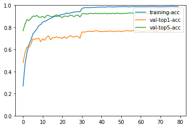

Python 3.5.2 (default, Oct 8 2019, 13:06:37)
Type "copyright", "credits" or "license" for more information.
IPython 7.5.0 -- An enhanced Interactive Python.
Restarting kernel...
ERROR:root:Invalid alias: The name clear can't be aliased because it is another magic command.
ERROR:root:Invalid alias: The name more can't be aliased because it is another magic command.
ERROR:root:Invalid alias: The name less can't be aliased because it is another magic command.
ERROR:root:Invalid alias: The name man can't be aliased because it is another magic command.
In [1]: runfile('/home/hp/lcx/Action-Recognition/test_model.py', wdir='/home/hp/lcx/Action-Recognition')
Load 9537 training samples.
[21:00:09] src/operator/nn/./cudnn/./cudnn_algoreg-inl.h:97: Running performance tests to find the best convolution algorithm, this can take a while... (set the environment variable MXNET_CUDNN_AUTOTUNE_DEFAULT to 0 to disable)
[Epoch 0] train=0.268953 loss=3.051447 time: 626.971417
[Epoch 0] val top1 =0.479514 top5=0.768438 val loss=2.137843
[Epoch 1] train=0.466499 loss=2.020077 time: 581.605013
[Epoch 1] val top1 =0.571240 top5=0.830029 val loss=1.691267
[Epoch 2] train=0.572402 loss=1.565012 time: 576.977797
[Epoch 2] val top1 =0.621464 top5=0.871266 val loss=1.429230
[Epoch 3] train=0.644962 loss=1.267594 time: 537.162487
[Epoch 3] val top1 =0.618821 top5=0.860428 val loss=1.502014
[Epoch 4] train=0.684073 loss=1.118445 time: 552.971344
[Epoch 4] val top1 =0.648956 top5=0.880782 val loss=1.342052
[Epoch 5] train=0.740904 loss=0.916101 time: 511.498783
[Epoch 5] val top1 =0.695215 top5=0.902723 val loss=1.203793
[Epoch 6] train=0.761455 loss=0.832540 time: 518.630861
[Epoch 6] val top1 =0.691250 top5=0.898758 val loss=1.181886
[Epoch 7] train=0.785677 loss=0.743838 time: 494.057312
[Epoch 7] val top1 =0.697595 top5=0.908274 val loss=1.157965
[Epoch 8] train=0.815665 loss=0.642425 time: 496.763567
[Epoch 8] val top1 =0.701824 top5=0.893206 val loss=1.214410
[Epoch 9] train=0.825627 loss=0.606974 time: 478.927134
[Epoch 9] val top1 =0.669839 top5=0.890827 val loss=1.244003
[Epoch 10] train=0.847227 loss=0.537977 time: 462.398456
[Epoch 10] val top1 =0.696801 top5=0.900079 val loss=1.169060
[Epoch 11] train=0.854147 loss=0.508234 time: 471.999313
[Epoch 11] val top1 =0.682527 top5=0.886069 val loss=1.288931
[Epoch 12] train=0.860963 loss=0.477409 time: 459.378998
[Epoch 12] val top1 =0.711869 top5=0.907745 val loss=1.146996
[Epoch 13] train=0.873021 loss=0.443267 time: 480.274179
[Epoch 13] val top1 =0.720856 top5=0.906952 val loss=1.141006
[Epoch 14] train=0.881200 loss=0.410582 time: 430.653225
[Epoch 14] val top1 =0.685699 top5=0.898493 val loss=1.325915
[Epoch 15] train=0.888539 loss=0.393010 time: 441.865799
[Epoch 15] val top1 =0.707375 top5=0.896907 val loss=1.188490
[Epoch 16] train=0.900598 loss=0.336525 time: 409.600651
[Epoch 16] val top1 =0.705525 top5=0.903251 val loss=1.303630
[Epoch 17] train=0.897767 loss=0.367736 time: 427.624451
[Epoch 17] val top1 =0.715305 top5=0.914089 val loss=1.151103
[Epoch 18] train=0.908147 loss=0.321923 time: 395.305552
[Epoch 18] val top1 =0.706846 top5=0.899022 val loss=1.207695
[Epoch 19] train=0.912237 loss=0.303023 time: 404.182450
[Epoch 19] val top1 =0.708168 top5=0.900079 val loss=1.245442
[Epoch 20] train=0.916431 loss=0.286792 time: 387.958274
[Epoch 20] val top1 =0.698652 top5=0.887391 val loss=1.343659
[Epoch 21] train=0.919367 loss=0.279801 time: 374.132237
[Epoch 21] val top1 =0.717156 top5=0.901930 val loss=1.212552
[Epoch 22] train=0.929433 loss=0.247037 time: 381.181901
[Epoch 22] val top1 =0.700502 top5=0.900608 val loss=1.280093
[Epoch 23] train=0.927231 loss=0.247969 time: 365.349111
[Epoch 23] val top1 =0.712133 top5=0.898493 val loss=1.243039
[Epoch 24] train=0.929118 loss=0.240946 time: 367.449586
[Epoch 24] val top1 =0.725615 top5=0.909596 val loss=1.264353
[Epoch 25] train=0.934466 loss=0.220594 time: 353.810898
[Epoch 25] val top1 =0.715570 top5=0.907481 val loss=1.205861
[Epoch 26] train=0.937611 loss=0.203793 time: 356.736914
[Epoch 26] val top1 =0.711605 top5=0.895850 val loss=1.396825
[Epoch 27] train=0.940128 loss=0.208649 time: 329.802449
[Epoch 27] val top1 =0.720856 top5=0.908538 val loss=1.236017
[Epoch 28] train=0.942540 loss=0.195009 time: 338.110220
[Epoch 28] val top1 =0.715041 top5=0.911182 val loss=1.239645
[Epoch 29] train=0.940652 loss=0.200373 time: 325.233963
[Epoch 29] val top1 =0.701295 top5=0.893471 val loss=1.396009
[Epoch 30] train=0.970536 loss=0.106183 time: 327.936524
[Epoch 30] val top1 =0.758393 top5=0.920962 val loss=1.119604
[Epoch 31] train=0.977561 loss=0.080504 time: 323.377687
[Epoch 31] val top1 =0.756278 top5=0.925985 val loss=1.116093
[Epoch 32] train=0.978505 loss=0.070371 time: 319.412133
[Epoch 32] val top1 =0.759450 top5=0.921491 val loss=1.132935
[Epoch 33] train=0.978714 loss=0.075378 time: 315.220665
[Epoch 33] val top1 =0.764737 top5=0.920434 val loss=1.104763
[Epoch 34] train=0.978295 loss=0.072198 time: 317.178986
[Epoch 34] val top1 =0.764473 top5=0.927306 val loss=1.132275
[Epoch 35] train=0.979658 loss=0.067585 time: 322.553305
[Epoch 35] val top1 =0.764473 top5=0.925985 val loss=1.097308
[Epoch 36] train=0.981650 loss=0.061354 time: 311.433357
[Epoch 36] val top1 =0.763151 top5=0.924927 val loss=1.122086
[Epoch 37] train=0.980287 loss=0.065490 time: 326.071135
[Epoch 37] val top1 =0.770288 top5=0.928099 val loss=1.100553
[Epoch 38] train=0.983223 loss=0.055778 time: 310.238611
[Epoch 38] val top1 =0.766852 top5=0.922548 val loss=1.113429
[Epoch 39] train=0.983852 loss=0.054136 time: 315.083610
[Epoch 39] val top1 =0.762887 top5=0.925985 val loss=1.169684
[Epoch 40] train=0.984377 loss=0.052575 time: 311.396617
[Epoch 40] val top1 =0.761301 top5=0.923870 val loss=1.172623
[Epoch 41] train=0.983538 loss=0.054576 time: 305.191336
[Epoch 41] val top1 =0.762887 top5=0.926249 val loss=1.181631
[Epoch 42] train=0.983118 loss=0.054109 time: 311.218137
[Epoch 42] val top1 =0.765530 top5=0.927571 val loss=1.141171
[Epoch 43] train=0.986159 loss=0.047650 time: 304.909378
[Epoch 43] val top1 =0.761301 top5=0.921491 val loss=1.210060
[Epoch 44] train=0.985740 loss=0.046218 time: 304.743398
[Epoch 44] val top1 =0.768438 top5=0.927306 val loss=1.188003
[Epoch 45] train=0.985530 loss=0.045338 time: 305.821909
[Epoch 45] val top1 =0.764473 top5=0.924134 val loss=1.195440
[Epoch 46] train=0.984586 loss=0.045621 time: 298.669859
[Epoch 46] val top1 =0.761036 top5=0.927835 val loss=1.223628
[Epoch 47] train=0.985320 loss=0.048374 time: 310.683347
[Epoch 47] val top1 =0.764473 top5=0.923341 val loss=1.231337
[Epoch 48] train=0.986054 loss=0.045046 time: 305.362804
[Epoch 48] val top1 =0.765794 top5=0.930743 val loss=1.195412
[Epoch 49] train=0.986579 loss=0.043434 time: 301.462201
[Epoch 49] val top1 =0.765794 top5=0.924927 val loss=1.188106
[Epoch 50] train=0.986369 loss=0.046929 time: 296.281820
[Epoch 50] val top1 =0.761036 top5=0.925456 val loss=1.226438
[Epoch 51] train=0.988361 loss=0.041556 time: 294.889265
[Epoch 51] val top1 =0.764473 top5=0.924927 val loss=1.229688
[Epoch 52] train=0.987103 loss=0.041325 time: 299.405381
[Epoch 52] val top1 =0.767645 top5=0.926778 val loss=1.227138
[Epoch 53] train=0.987103 loss=0.042848 time: 295.645851
[Epoch 53] val top1 =0.770024 top5=0.927571 val loss=1.240329
[Epoch 54] train=0.985215 loss=0.049230 time: 296.655186
[Epoch 54] val top1 =0.768173 top5=0.930478 val loss=1.199191
[Epoch 55] train=0.987208 loss=0.042856 time: 300.713940
[Epoch 55] val top1 =0.767380 top5=0.929950 val loss=1.223724
[Epoch 56] train=0.987417 loss=0.042636 time: 291.434919
[Epoch 56] val top1 =0.770552 top5=0.929157 val loss=1.207580
[Epoch 57] train=0.988571 loss=0.040487 time: 290.060893
[Epoch 57] val top1 =0.769231 top5=0.927306 val loss=1.189441
[Epoch 58] train=0.988781 loss=0.036044 time: 296.355880
[Epoch 58] val top1 =0.768966 top5=0.924663 val loss=1.234249
[Epoch 59] train=0.987313 loss=0.042233 time: 293.833414
[Epoch 59] val top1 =0.773725 top5=0.927835 val loss=1.231869
[Epoch 60] train=0.988151 loss=0.038217 time: 290.058140
[Epoch 60] val top1 =0.762622 top5=0.928628 val loss=1.231346
[Epoch 61] train=0.987313 loss=0.041645 time: 294.019466
[Epoch 61] val top1 =0.760243 top5=0.923606 val loss=1.229740
[Epoch 62] train=0.987942 loss=0.037607 time: 290.232895
[Epoch 62] val top1 =0.767645 top5=0.922284 val loss=1.232380
[Epoch 63] train=0.988361 loss=0.038327 time: 288.630071
[Epoch 63] val top1 =0.770552 top5=0.926249 val loss=1.225082
[Epoch 64] train=0.988361 loss=0.039793 time: 291.050825
[Epoch 64] val top1 =0.772139 top5=0.928892 val loss=1.250912
[Epoch 65] train=0.989410 loss=0.032084 time: 287.806077
[Epoch 65] val top1 =0.765530 top5=0.928364 val loss=1.235496
[Epoch 66] train=0.988256 loss=0.038776 time: 285.917661
[Epoch 66] val top1 =0.767645 top5=0.927042 val loss=1.206235
[Epoch 67] train=0.989829 loss=0.036674 time: 288.615637
[Epoch 67] val top1 =0.767645 top5=0.928364 val loss=1.256177
[Epoch 68] train=0.988047 loss=0.038368 time: 286.432976
[Epoch 68] val top1 =0.759715 top5=0.925720 val loss=1.235623
[Epoch 69] train=0.987732 loss=0.038213 time: 288.165639
[Epoch 69] val top1 =0.769759 top5=0.929685 val loss=1.212844
[Epoch 70] train=0.987103 loss=0.038685 time: 290.290746
[Epoch 70] val top1 =0.772403 top5=0.930478 val loss=1.188626
[Epoch 71] train=0.987627 loss=0.039951 time: 286.462870
[Epoch 71] val top1 =0.768966 top5=0.931271 val loss=1.171645
[Epoch 72] train=0.988676 loss=0.034239 time: 286.472479
[Epoch 72] val top1 =0.776897 top5=0.932593 val loss=1.190236
[Epoch 73] train=0.988676 loss=0.037773 time: 287.342361
[Epoch 73] val top1 =0.768702 top5=0.925720 val loss=1.252216
[Epoch 74] train=0.989410 loss=0.034221 time: 283.419572
[Epoch 74] val top1 =0.766059 top5=0.927571 val loss=1.187801
[Epoch 75] train=0.989305 loss=0.033992 time: 284.040780
[Epoch 75] val top1 =0.765794 top5=0.926778 val loss=1.209656
[Epoch 76] train=0.991297 loss=0.029832 time: 287.800667
[Epoch 76] val top1 =0.769759 top5=0.931271 val loss=1.208211
[Epoch 77] train=0.989829 loss=0.036364 time: 284.735007
[Epoch 77] val top1 =0.772403 top5=0.926778 val loss=1.176473
[Epoch 78] train=0.989515 loss=0.033513 time: 284.922799
[Epoch 78] val top1 =0.780069 top5=0.934179 val loss=1.197237
[Epoch 79] train=0.989095 loss=0.035778 time: 285.925148
[Epoch 79] val top1 =0.772403 top5=0.927042 val loss=1.222187

In [2]: